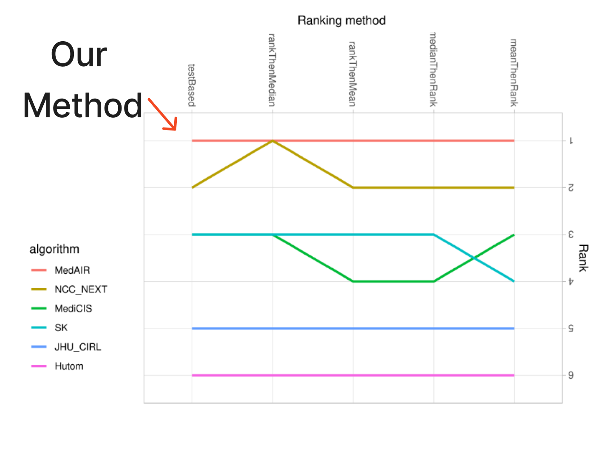
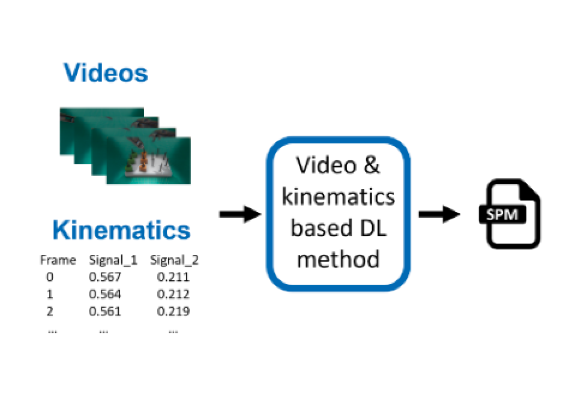
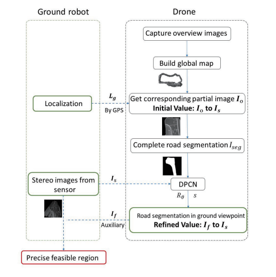
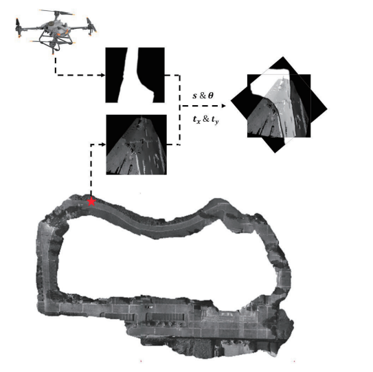
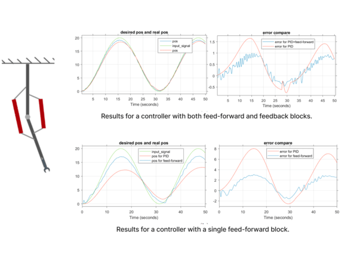
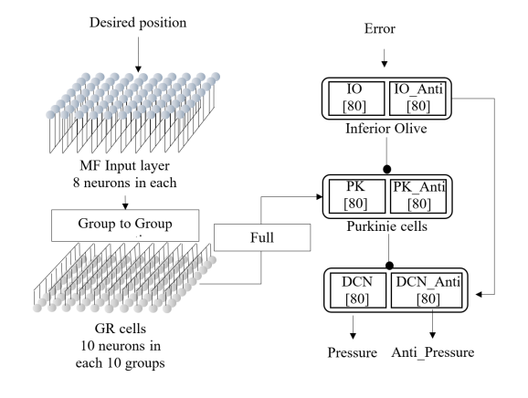

|
Yunshuang (Sheyla) Li I am a Robotics master student at GRASP Lab, University of Pennsyvania, where I work at the intersections of robotics, computer vision, and machine learning. Currently, I'm a member of PAL research group, advised by Prof. Dinesh Jayaraman. Previoulsy, I worked with Prof. Qi Dou at Chinese University of Hongkong (CUHK) for an internship. I received my Honorable B.S. degree from Chu Kochen Honors College, Zhejiang University in 2022. Email / CV / Bio / Google Scholar / Twitter |
{kind=link}
ResearchI'm interested in making robot learning more efficient and robust by studying how the notion of "ATTENTION" can be useful for robots during observation, representation, and policy learning. My career goal is to make robot learning as easy and robust as possible. (* indicates equal contribution, † indicates equal advising) |

|
Vision-Based Contact Localization Without Touch or Force Sensing
Leon Kim, Yunshuang Li, Michael Posa, Dinesh Jayaraman Conference on Robot Learning (CoRL), 2023 arXiv / project page / video We propose a challenging vision-based extrinsic contact localization task: with only a single RGB-D camera view of a robot workspace, identify when and where an object held by the robot contacts the rest of the environment. Our final approach im2contact demonstrates the promise of versatile general-purpose contact perception from vision alone, performing well for localizing various contact types (point, line, or planar; sticking, sliding, or rolling; single or multiple), and even under occlusions in its camera view. |
|


|
PEg TRAnsfer Workflow recognition challenge report: Do multimodal data improve recognition?
Arnaud Huaulmé, Kanako Harada, (et al., including Yunshuang Li, Yonghao Long, Qi Dou) Computer Methods and Programs in Biomedicine, 2023 arXiv This is the report paper on Workflow Recognition Challenge in MICCAI 2021. I lead the MedAIR team and rank the first over all the 5 rank method in one sub-challenge on multi-modal (videos and kinematics) workflow recognition of robotic surgery videos. |
|


|
Collaborative Recognition of Feasible Region with Aerial and Ground Robots through DPCN
Yunshuang Li, Zheyuan Huang, Zexi Chen, Yue Wang, Rong Xiong IEEE International Conference on Real-time Computing and Robotics (RCAR), 2021 arXiv We present a collaborative system with aerial and ground robots to gain precise recognition of feasible region. Taking the aerial robots' advantages of having large scale variance of view points of the same route which the ground robots is on, the collaboration work provides global information of road segmentation for the ground robot, thus enabling it to obtain feasible region and adjust its pose ahead of time. |
|


|
Control of Pneumatic Artificial Muscles with SNN-based Cerebellar-like Model
Hongbo Zhang*, Yunshuang Li*, Yipin Guo*, Xinyi Chen, Qinyuan Ren International Conference on Social Robotics (ICSR), 2021 arXiv / poster Inspired by Cerebellum's vital functions in control of human's physical movement, we propose a neural network model of Cerebellum based on spiking neuron networks (SNNs). We apply the model as a feed-forward controller in controlling a 1-DOF robot arm driven by PAMs. |
Service
CIS 5200 Machine Learning: TA in Fall 24 at Penn. |
Adwards
CoRL 2023 Travel Grant 2023 |
|
Inspired by the template here. |